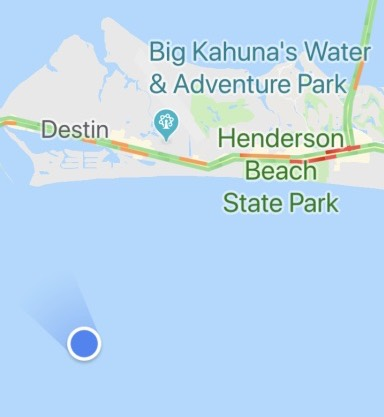

November 23 2015
Getting down with the Fishes!
My favorite dive site is in the Bahamas, unoriginally referred to as the Blue Hole. Here you can find all sorts of corals and fishes making their homes on the side walls of this large pit in the middle of the Carribean just off of Nassau island. Particularly cute is one big turtle who will swim out every morning from his home to go look for jellies to eat!
In a few weeks I'll be going to Florida, where we will go dive in Destin with our friends at Scubatech. This will be my third time going out on a weekend dive trip with them, and there are serveral great sites out there. I've even seen a small shark swimming by!
My Favorite Florida Dive Site
